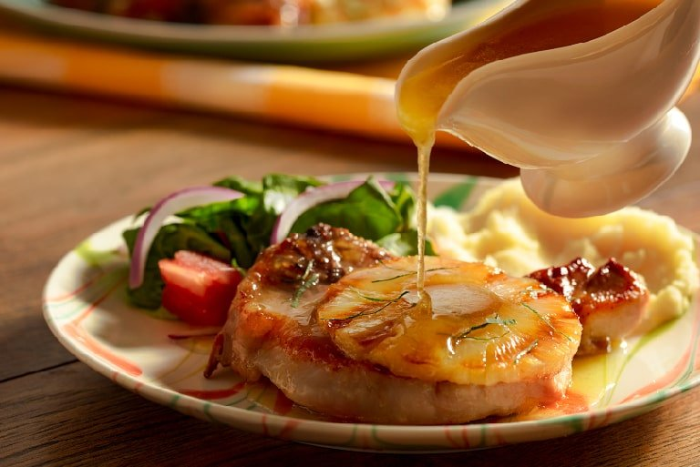

Cerdo con salsa de piña

Ingredientes: 4 Raciones
- 8 rodajas piña
- Jugo de 1 naranja
- 1/2 jugo de limón ácido
- 1 pizca sal
- 1 pizca práprika
- 1 cdita albahaca seca
- 3 cdita maicena
- 1/2 kilo posta de cerdo
- 1 pizca de romero
- 2 cucharas de azúcar moreno
- 2 cucharas aceite de oliva
- 1 taza agua
- 1/2 cebolla y 1 diente de ajo grande
Preparación:
-
Licuamos 4 rodajas de piña con 1/2 taza de agua, las 4 rodajas de piña
restantes las picamos en trozos pequeños.
-
Doramos las carne de cerdo con la sal, la praprika, la cebolla y el
ajo. Dejamos reposar.
-
En una olla pequeña hacemos la salsa de piña. Añadimos el jugo de piña, el jugo de naranja y el de limón, y unas
hojitas de romero. dejamos que hierva un poco y añadimos la maicena
previamente revuelta con un poco de agua qué no quede muy líquido.
-
En una sartén ponemos aceite dejamos calentar a una temperatura media
y añadimos la carne de cerdo bajamos un poco el calor para que no se
haga chicharrón y suelte un poco de agua.
-
Ya con el cerdo bien cocinado y listo añadimos la salsa de piña,
revolvemos y dejamos cocí ar por 5 minutos en temperatura :termómetro:
baja. Y servimos.
INICIO